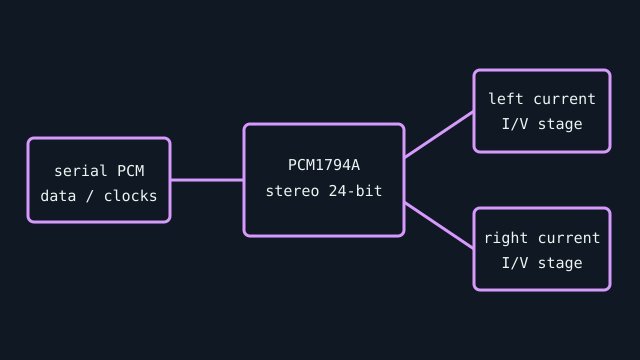

[ SEMICONDUCTOR // STEREO DAC ]
Texas Instruments PCM1794A
A high-performance stereo audio DAC used in discrete audio boards and equipment. It is a converter IC rather than a complete computer DAC; clocking, digital filtering, I/V stage, power, and connectors belong to the host design.

Specifications
| Product ID | Texas Instruments PCM1794A, 24-bit stereo DAC IC; package and top marking must be checked on the actual assembly. |
|---|---|
| Digital interface | Serial PCM/I²S-compatible digital audio input with selectable format and system-clock requirements; it has no USB host interface. |
| Conversion | 24-bit stereo delta-sigma DAC, specified for sample rates up to 192 kHz. Differential current outputs require a suitable analog I/V/output stage. |
| Connectors / I/O | IC-level serial data, clock/control, reference, and differential analog-current pins; board implementation determines line-level RCA/TRS outputs and digital inputs. |
| Drivers / OS | No operating-system driver: host transport and driver live in the surrounding digital interface (for example USB receiver or PCI/PCIe controller), if used. |
| Variant compatibility | Do not substitute PCM1794/PCM1794A or other PCM179x devices solely by package appearance; verify suffix, datasheet revision, pinout, clocking, and analog-stage design. |
Service & preservation
Identify the full top marking and the companion serial-audio receiver, clock, op-amp, and power-supply devices on the board. Preserve the board schematic and test points. Do not power a replacement DAC until supply rails, reference pins, I/V circuitry, and clock compatibility have been checked against the datasheet.
Primary sources
- Texas Instruments — PCM1794A product pageManufacturer source for product identity and design documentation.
- Texas Instruments — PCM1794A datasheet (PDF)Primary source for conversion, serial input, output, clocks, and electrical specifications.